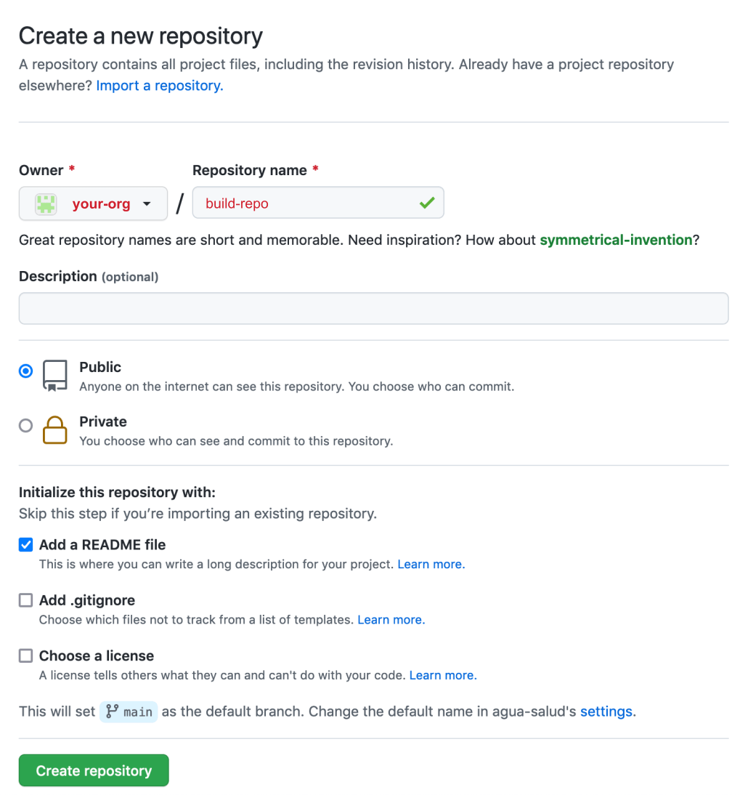
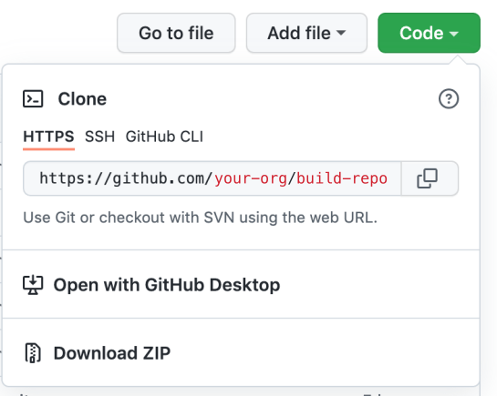
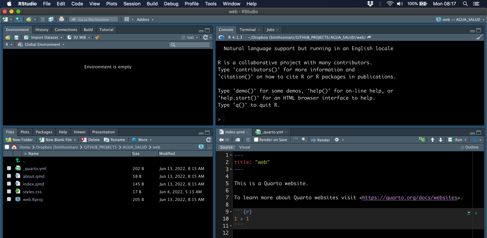

#R code blocks will look like this.This is how I created this website for the SWELTR temperature manipulation experiment using a) Quarto to build the site and b) GitHub Pages to host the site.
This tutorial assumes you have a) git installed, b) a GitHub account, c) RStudio installed, and d) Quarto for R installed.
You will need to jump back and forth between the RStudio IDE and a terminal. You can use the terminal in RStudio if you wish, it is up to you.
I will try to point out which code you run in the RStudio console and which you run in a terminal. I will use different code block colors to help you differentiate between the two.
When you see a code block that looks like this, the command(s) must be executed in the RStudio console.
When you see a code block that looks like this, the command(s) must be executed in a terminal.
#Terminal code will look like this.Overview
There are two main options for a GitHub Pages website.
- A user or organization site.
- A project site.
The difference between the two is that a user or organization site is a single site, like https://microbes.github.io/, and individual pages on this site are indexed like so:
https://microbes.github.io/about.html.
A project site on the other hand is like a collection of sites within a main site. A project site would have the same root URL (e.g., https://microbes.github.io/) but each project would have it’s own unique extension, like these examples:
https://microbes.github.io/deep-sea/ or https://microbes.github.io/forest-soils/.
Individual pages within a project site would be indexed like this: https://microbes.github.io/deep-sea/about.html
As mentioned above, the instructions here are for a GitHub Pages project site.
For more information see the GitHub Pages documentation. You can also check out A guide to using Github Pages.
Key Steps
Here is an overview of what we will be doing in this tutorial:
- Create organization on GitHub.
- Create two GitHub repos for the site, one to host the organization URL and another to host the raw code plus the
gh-pagesbranch. - Clone the code repo to your computer.
- Create a
gh-pagesbranch. - Build the initial site with Quarto for R.
- Customize the default
_quarto.ymlfile. - Rebuild the site.
- Push changes to GitHub.
1. GitHub Setup
Create organization on GitHub
If you already have an organization skip to the next step.
a) In the upper right-hand corner of your GitHub page click on your avatar and select Your organizations.

b) On the page that opens, hit New organization.

c) Next, give your organization a name, provide an email address, and indicate whether this is for a personal or institutional account. Then hit Next.
The name of the organization does not need to be the same as the website you create later.

d) Here you can add members. For now, just hit Complete setup.

Create repos for the site
In this section, we need to create two repositories for the site: i) one to host the organization URL (i.e., https://sweltr.github.io/) and ii) another to host the raw code (e.g. .qmd files) plus the gh-pages branch. More on that in a minute. I am including instructions for things you MUST do in order to get the rest of the tutorial to work properly.
a) Hit the Create a new repository button.

b) First, we create the github.io repo to host the main site.
There are a few things to do here:
- Name the repo, Here we call it
sweltr.github.io. it doesn’t matter what you call this but it must be unique and have the.github.ioextension. - Make sure repo is public.
- You must Initialize this repository with a README File.
- Hit the
Create repositorybutton. This creates themainbranch of the repo.
Note: you can host a site on GitHub without the
github.ioextension but that is a more advanced skill and beyond the scope of this tutorial.

c) Next, we create the build repo to host the project source code. These steps are similar to those described above.
- Name the repo, here we call it
high-temp. This will be the extension of the project site. So this project’s URL will be https://sweltr.github.io/high-temp/. - Make sure the repo is public.
- You must Initialize this repository with a README File.
- Hit the
Create repositorybutton. This creates themainbranch of the repo.
Note: you can make these repos private, however that is a bit more advanced and beyond the scope of the tutorial provided here :)

Review
Here is what we have so far:
An organization at https://github.com/sweltr/ that contains 2 repos, one for the GitHub Pages root URL, https://github.com/sweltr/sweltr.github.io and another for the source code, https://github.com/sweltr/high-temp. At this point both repos should only contain README files.
We also have two URLs, one for the organiztion site (https://sweltr.github.io/) and another for the project site (https://sweltr.github.io/high-temp/).
2. Local Setup
Now that we have the main pieces in place of GitHub, it is time to setup everything on our local machine.
Clone the Code Repo
Let’s take a look at the high-temp repo page. There are two important things to point out. First, in the upper left corner is a box that says main. This is the primary branch for the repo and contains the source code for the site build (e.g., the .qmd files). This will become important in a moment when we create a branch called gh-pages that will link the build files (e.g., .html files) to the organization URL. More on that in a minute.
First, we need to clone the high-temp repo from GitHub to our local machine. There are several ways to do this, but I will show you how I do it. Navigate to the repo page. At the time of creation, it looked like this:

See the green button that says Code. Click on that button and copy the URL.

Open a terminal window and navigate to a place where you want the repo to live on your computer. We will use the command git clone with the URL you just copied. Run the clone command and then cd into the directory.
git clone https://github.com/sweltr/high-temp.git
cd high-temp/Now have a look at the contents of the directory using the ls command. We want to append the command with the -al flag. The l option provides extended details about each file/directory and the a option lists hidden files—files/directories that begin with a period and are hidden by default.
ls -alSo we have the README.md file that was generated when we created the repo and a hidden directory called .git. The .git directory is super, super important because this is how the remote repo (on GitHub) and the local repo (on your computer) keep track of changes.
total 8
drwxr-xr-x@ 4 scottjj 923590601 128 May 13 08:25 .
drwxr-xr-x@ 5 scottjj 923590601 160 May 13 08:25 ..
drwxr-xr-x@ 12 scottjj 923590601 384 May 13 08:25 .git
-rw-r--r--@ 1 scottjj 923590601 11 May 13 08:25 README.mdCreate a gh-pages branch
Great. We have the high-temp repo cloned on our local machine. For historical reason, a GitHub Pages site needs to be built to a directory called public/. But we do not need to upload the public/ build directory to the main branch on our repo. So, we are going to create a .gitignore file and add public/ to that file. The .gitignore tells git to ignore whatever is listed in that file when it pushes local changes to the remote repository. As you build your site, you will need to add additional items to the .gitignore file.
echo public/ >> .gitignore # Add items as needed.If you run ls -al again you should see the .gitignore file is now listed in the directory. If you type nano .gitignore you can see the contents of the file.
OK, now let’s push the changes we made to the local branch (origin) to the remote branch (main). First, run:
git statusHopefully you see the .gitignore file listed in red along with some other details. This means there are untracked files in your repo. Go ahead and run:
git add --all
git statusNow you should see the same files in green. This means the files are staged and ready to commit. Now run:
git commit -a -m "initial commit"
git push origin mainIf everything worked OK, your files have been pushed to the GitHub repo. Have a look at the code repo on GitHub to confirm your changes have been pushed.

Now, it is important that there is no public/ directory yet. Just to make sure there is no public/ directory, we can run the remove command in our terminal.
rm -rf public Now we go through the steps to create the the gh-pages branch.
git checkout --orphan gh-pagesSwitched to a new branch 'gh-pages'git reset --hard
git commit --allow-empty -m "Initializing gh-pages branch"[gh-pages (root-commit) fd6028a] Initializing gh-pages branchgit push origin gh-pagesEnumerating objects: 2, done.
Counting objects: 100% (2/2), done.
Writing objects: 100% (2/2), 180 bytes | 180.00 KiB/s, done.
Total 2 (delta 0), reused 0 (delta 0), pack-reused 0
remote:
remote: Create a pull request for 'gh-pages' on GitHub by visiting:
remote: https://github.com/sweltr/high-temp/pull/new/gh-pages
remote:
To https://github.com/sweltr/high-temp.git
* [new branch] gh-pages -> gh-pagesgit checkout mainEnumerating objects: 2, done.
Counting objects: 100% (2/2), done.
Writing objects: 100% (2/2), 180 bytes | 180.00 KiB/s, done.
Total 2 (delta 0), reused 0 (delta 0), pack-reused 0
remote:
remote: Create a pull request for 'gh-pages' on GitHub by visiting:
remote: https://github.com/sweltr/high-temp/pull/new/gh-pages
remote:
To https://github.com/sweltr/high-temp.git
* [new branch] gh-pages -> gh-pages
(base) high-temp: scottjj$ git checkout main
Switched to branch 'main'
Your branch is up to date with 'origin/main'.git worktree add -B gh-pages public origin/gh-pagesPreparing worktree (resetting branch 'gh-pages'; was at fd6028a)
Branch 'gh-pages' set up to track remote branch 'gh-pages' from 'origin'.
HEAD is now at fd6028a Initializing gh-pages branchNow run the following to see what is in the repo directory.
ls -aldrwxr-xr-x@ 6 scottjj 923590601 192 May 13 08:41 .
drwxr-xr-x@ 5 scottjj 923590601 160 May 13 08:25 ..
drwxr-xr-x@ 14 scottjj 923590601 448 May 13 08:41 .git
-rw-r--r--@ 1 scottjj 923590601 8 May 13 08:40 .gitignore
-rw-r--r--@ 1 scottjj 923590601 11 May 13 08:40 README.md
drwxr-xr-x@ 3 scottjj 923590601 96 May 13 08:41 publicThere should now be a public/ directory. Run the following to make sure this is a .git directory.
ls -al public/total 8
drwxr-xr-x@ 3 scottjj 923590601 96 May 13 08:41 .
drwxr-xr-x@ 6 scottjj 923590601 192 May 13 08:41 ..
-rw-r--r--@ 1 scottjj 923590601 104 May 13 08:41 .gitReview
At this point all the pieces are in place to build your site and host it on GitHub. In addition to the repos you have on GitHub, you should have a local directory of the code repo, in our case it is called high-temp. In this directory there should be a README.md file, a .gitignore file, a .git directory, and the public/ directory.
3. Site Build
Time to build the site. As mentioned in the intro, we will use Quarto to create the website. To keep things simple, we will generate the initial site in a temporary directory and copy the files to the git formatted directory at the end.
Open RStudio and hit File >> New Project. In the pop-up window hit New Project.

Then in the New Project Wizard select the New Directory option.

Under Project Type, scroll down until you see Quarto Website and select that option.

Give the Directory a name and hit Create Project. Consider this an intermediate step in the process. We need to create a project directory to generate the initial site. Eventually we will copy all of these file to the directory of the repo we cloned earlier. You can call this something like web if you wish, it doesn’t really matter since this is only a temporary directory.

Now, if everything worked OK, you should see that five files were created and two of the files are open in your RStudio IDE.
– index.qmd. This is the landing page of your site. This file is the first thing people see when they navigate to your site.
– _quarto.yml. This is a YAML file and is used to configure your site. DO NOT erase this file.

In fact, we need to edit the _quarto.yml file to configure it for our site. As you move further into building your site, you will need to make many modifications to this file. For now however, we will just focus on the minimum changes you need to make to get your site online. Go ahead and click on that file. This is what the default file looks like.

First, below the title line (nested under website) add the following lines.
site-url: https://sweltr.github.io/high-temp/
repo-url: https://github.com/sweltr/high-temp/The site-url is the .github.io URL we created way back when we created the site repo. The repo-url is the repo we created to host the project source code.
When you build or render your site, RStudio will dump all the site files (e.g., .html files) in the output_dir. The default output directory is _site, which RStudio generates when you render the site for the first time. I see no reason why you cannot leave the build directory as is but I prefer to call mine public_build/. Go ahead and add a line of the _quarto.yml file specifying the output-dir. This should be nested under project like so:
project:
type: website
output-dir: public_build
Great. One last thing to do. When you render your site, RStudio will try to add everything in the main directory to the output directory, in this case public_build/. There are many cases where this is not desirable. For example, let’s say we have you have a directory called sequence_data that contains a bunch of fastq files. We do not need these files to build the site (and we probably do not want these on GitHub) so we need to tell RStudio to ignore these files when it builds the site. For that, we add the line render nested under project. Here we can specify what is, and is not, rendered when the site is build. As you get deeper into building your site, you will likely have many files/directories that you want excluded.
Don’t get confused here. The
renderline in the_quarto.ymlfile is different than the.gitignorefile discussed earlier. They do completely different things. If this is unclear, go back and review the section on the.gitignorefile.
For now, we will focus on the necessary things to include and exclude from the build. Items must be listed on separate lines, in double quotes. So let’s say we want to render all .qmd files but ignore a few directories. The way to code this is that anything we want to exclude should begin with an exclamation point (!). Go ahead and add these lines.
project:
type: website
output-dir: public_build
render:
- "*.qmd"
- "!public/"
- "!public_build/"OK, a little explanation. The first thing we need to exclude in the actual build directory public_build/ (or _site if you kept the default). If we do not include this, RStudio will get stuck in a loop where it continues to add public_build/ to the public_build/ directory. Next, remember that to host a gh-pages site, the build files (e.g., the .html files) must be in a directory called public/. We created this directory when we created the gh-pages branch.
So why don’t we just make the buld directory
public/instead ofpublic_build/or_site/?
Good question. The reason is that public/ is a special directory that contains git related files (hidden by default). When we render a site, RStudio will first overwrite the output directory, thereby deleting the .git files, and then recreate the output directory add the new build files. This is not cool. To avoid this, we use an intermediate output directory, public_build/ (or whatever you call it), to generate the site. Than we can copy all the files from the output directory to the public/ directory without losing the git info. This is a little cumbersome but I have not yet found a workaround. This is still an issue as of this writing.
If you changed the name of the default build directory, go ahead and remove the default directory now. In your terminal type:
rm -r _siteNow, save all of your changes to the _quarto.yml file and in the RStudio Console run the following:
quarto::quarto_render()You should see a new directory called public_build/. Open that folder and double-click on index.html. The homepage of your new site should open in your default browser.
Review
Sweet. Let’s review what we have so far. From the 1. GitHub Setup we created two repos, one to host the .github.io organization and another to host the raw code (e.g. .qmd files) plus the gh-pages branch. In 2. Local Setup we cloned the code repo and create a gh-pages branch in a directory called public/. In 3. Site Build we generated an initial site within a dummy directory, modified the _quarto.yml file, and re-rendered the site to an output directory called public_build/
Integration
Time to push our changes to GitHub. The first step is to copy all of the files in your dummy site directory to the directory of the cloned repo (high-temp).

First, in your terminal, navigate to the cloned repo directory. Use the pwd command to confirm your location.
pwd/Users/scottjj/Dropbox (Smithsonian)/GITHUB_PROJECTS/SWELTR/high-tempAssuming your directory structure setup is similar to the image above, next run the following to copy all of the files.
cp -r ../dummy/* .Now take a look at the contents of the current working directory.
ls -alIt should look something like this:
drwxr-xr-x 14 scottjj 923590601 448 May 13 09:18 .
drwxr-xr-x@ 7 scottjj 923590601 224 May 13 09:15 ..
-rw-r--r--@ 1 scottjj 923590601 6148 May 13 09:18 .DS_Store
-rw-r--r-- 1 scottjj 923590601 50 May 13 09:18 .Rhistory
drwxr-xr-x 4 scottjj 923590601 128 May 13 09:18 .Rproj.user
drwxr-xr-x@ 14 scottjj 923590601 448 May 13 08:41 .git
-rw-r--r--@ 1 scottjj 923590601 8 May 13 08:40 .gitignore
-rw-r--r--@ 1 scottjj 923590601 11 May 13 08:40 README.md
-rw-r--r-- 1 scottjj 923590601 202 May 13 09:18 _quarto.yml
-rw-r--r-- 1 scottjj 923590601 58 May 13 09:18 about.qmd
-rw-r--r-- 1 scottjj 923590601 145 May 13 09:18 index.qmd
-rw-r--r-- 1 scottjj 923590601 17 May 13 09:18 styles.css
drwxr-xr-x@ 3 scottjj 923590601 96 May 13 08:41 public
drwxr-xr-x 7 scottjj 923590601 224 May 13 09:18 public_build
-rw-r--r-- 1 scottjj 923590601 225 May 13 09:18 web.RprojAt this point we need to do a few final housekeeping tasks. First, let’s add a few additional files to the .gitignore file.
Run this command in your terminal. You should only see the public/ directory listed.
nano .gitignoreAdd the following lines, save the file, and exit nano.
.Rproj.user
.Rhistory
.RData
.Ruserdata
.Rapp.history
.DS_Store
web.Rproj
public_build/Now, copy all of the files from public_build/ to public/.
cp -r public_build/* public/Then move into the public/ directory and run git status.
cd public
git statusAll the untracked or changed files should be in red.
On branch gh-pages
Your branch is up to date with 'origin/gh-pages'.
Untracked files:
(use "git add <file>..." to include in what will be committed)
about.html
index.html
search.json
site_libs/
sitemap.xml
nothing added to commit but untracked files present (use "git add" to track)Now add the files to be committed and check the status again.
git add --all
git statusAll the untracked or changed files should now be green.
On branch gh-pages
Your branch is up to date with 'origin/gh-pages'.
Changes to be committed:
(use "git restore --staged <file>..." to unstage)
new file: about.html
new file: index.html
new file: search.json
new file: site_libs/anchor-4.2.2/anchor.min.js
new file: site_libs/autocomplete-0.37.1/autocomplete.min.js
new file: site_libs/bowser-1.9.3/bowser.min.js
new file: site_libs/distill-2.2.21/template.v2.js
new file: site_libs/font-awesome-5.1.0/css/all.css
new file: site_libs/font-awesome-5.1.0/css/v4-shims.css
new file: site_libs/font-awesome-5.1.0/webfonts/fa-brands-400.eot
new file: site_libs/font-awesome-5.1.0/webfonts/fa-brands-400.svg
new file: site_libs/font-awesome-5.1.0/webfonts/fa-brands-400.ttf
new file: site_libs/font-awesome-5.1.0/webfonts/fa-brands-400.woff
new file: site_libs/font-awesome-5.1.0/webfonts/fa-brands-400.woff2
new file: site_libs/font-awesome-5.1.0/webfonts/fa-regular-400.eot
new file: site_libs/font-awesome-5.1.0/webfonts/fa-regular-400.svg
new file: site_libs/font-awesome-5.1.0/webfonts/fa-regular-400.ttf
new file: site_libs/font-awesome-5.1.0/webfonts/fa-regular-400.woff
new file: site_libs/font-awesome-5.1.0/webfonts/fa-regular-400.woff2
new file: site_libs/font-awesome-5.1.0/webfonts/fa-solid-900.eot
new file: site_libs/font-awesome-5.1.0/webfonts/fa-solid-900.svg
new file: site_libs/font-awesome-5.1.0/webfonts/fa-solid-900.ttf
new file: site_libs/font-awesome-5.1.0/webfonts/fa-solid-900.woff
new file: site_libs/font-awesome-5.1.0/webfonts/fa-solid-900.woff2
new file: site_libs/fuse-6.4.1/fuse.min.js
new file: site_libs/header-attrs-2.11/header-attrs.js
new file: site_libs/headroom-0.9.4/headroom.min.js
new file: site_libs/jquery-3.6.0/jquery-3.6.0.js
new file: site_libs/jquery-3.6.0/jquery-3.6.0.min.js
new file: site_libs/jquery-3.6.0/jquery-3.6.0.min.map
new file: site_libs/popper-2.6.0/popper.min.js
new file: site_libs/tippy-6.2.7/tippy-bundle.umd.min.js
new file: site_libs/tippy-6.2.7/tippy-light-border.css
new file: site_libs/tippy-6.2.7/tippy.css
new file: site_libs/tippy-6.2.7/tippy.umd.min.js
new file: site_libs/webcomponents-2.0.0/webcomponents.js
new file: sitemap.xmlCommit the files.
git commit -m "Publishing to gh-pages initial commit"[gh-pages f30f1ff] Publishing to gh-pages initial commit
37 files changed, 22182 insertions(+)
create mode 100644 about.html
create mode 100644 index.html
create mode 100644 search.json
create mode 100644 site_libs/anchor-4.2.2/anchor.min.js
create mode 100644 site_libs/autocomplete-0.37.1/autocomplete.min.js
create mode 100644 site_libs/bowser-1.9.3/bowser.min.js
create mode 100644 site_libs/distill-2.2.21/template.v2.js
create mode 100644 site_libs/font-awesome-5.1.0/css/all.css
create mode 100644 site_libs/font-awesome-5.1.0/css/v4-shims.css
create mode 100644 site_libs/font-awesome-5.1.0/webfonts/fa-brands-400.eot
create mode 100644 site_libs/font-awesome-5.1.0/webfonts/fa-brands-400.svg
create mode 100644 site_libs/font-awesome-5.1.0/webfonts/fa-brands-400.ttf
create mode 100644 site_libs/font-awesome-5.1.0/webfonts/fa-brands-400.woff
create mode 100644 site_libs/font-awesome-5.1.0/webfonts/fa-brands-400.woff2
create mode 100644 site_libs/font-awesome-5.1.0/webfonts/fa-regular-400.eot
create mode 100644 site_libs/font-awesome-5.1.0/webfonts/fa-regular-400.svg
create mode 100644 site_libs/font-awesome-5.1.0/webfonts/fa-regular-400.ttf
create mode 100644 site_libs/font-awesome-5.1.0/webfonts/fa-regular-400.woff
create mode 100644 site_libs/font-awesome-5.1.0/webfonts/fa-regular-400.woff2
create mode 100644 site_libs/font-awesome-5.1.0/webfonts/fa-solid-900.eot
create mode 100644 site_libs/font-awesome-5.1.0/webfonts/fa-solid-900.svg
create mode 100644 site_libs/font-awesome-5.1.0/webfonts/fa-solid-900.ttf
create mode 100644 site_libs/font-awesome-5.1.0/webfonts/fa-solid-900.woff
create mode 100644 site_libs/font-awesome-5.1.0/webfonts/fa-solid-900.woff2
create mode 100644 site_libs/fuse-6.4.1/fuse.min.js
create mode 100644 site_libs/header-attrs-2.11/header-attrs.js
create mode 100644 site_libs/headroom-0.9.4/headroom.min.js
create mode 100644 site_libs/jquery-3.6.0/jquery-3.6.0.js
create mode 100644 site_libs/jquery-3.6.0/jquery-3.6.0.min.js
create mode 100644 site_libs/jquery-3.6.0/jquery-3.6.0.min.map
create mode 100644 site_libs/popper-2.6.0/popper.min.js
create mode 100644 site_libs/tippy-6.2.7/tippy-bundle.umd.min.js
create mode 100644 site_libs/tippy-6.2.7/tippy-light-border.css
create mode 100644 site_libs/tippy-6.2.7/tippy.css
create mode 100644 site_libs/tippy-6.2.7/tippy.umd.min.js
create mode 100644 site_libs/webcomponents-2.0.0/webcomponents.js
create mode 100644 sitemap.xmlAnd finally push the files to the gh-pages branch.
git push origin gh-pagesEnumerating objects: 55, done.
Counting objects: 100% (55/55), done.
Delta compression using up to 8 threads
Compressing objects: 100% (45/45), done.
Writing objects: 100% (54/54), 1.37 MiB | 348.00 KiB/s, done.
Total 54 (delta 1), reused 0 (delta 0), pack-reused 0
remote: Resolving deltas: 100% (1/1), done.
To https://github.com/sweltr/high-temp.git
fd6028a..f30f1ff gh-pages -> gh-pagesDo the same for the build files. Make sure you back out of the public directory with the cd ../ command. This time you are pushing to the main branch, not the gh-pages branch.
cd ../
git status
git add --all
git status
git commit -m "Publishing to gh-pages initial commit"
git push origin mainNow head over to your GitHub code repo and look at the two branches to make sure everything looks good. In this case, https://github.com/sweltr/high-temp. You should see the main branch of this repo—this contains all of the .qmd files.

Find the button in the upper left that says main. Click on that and select gh-pages.

The gh-pages branch contains all of the .html files.

Wait a few minutes and navigate to your project webpage. In our case, https://sweltr.github.io/high-temp/.
You site should be LIVE!!!
Adding content
Most of the steps up to this point should only need to be done once. Now it is time to add content to your site, customize the look, etc. From this point forward, whenever you make changes that you want to make public, you need to do the following:
- Render the site.
quarto::quarto_render()Or to build individual pages run:
quarto::quarto_render("new_page.qmd")- Copy files from
public_build/topublic/
cp -r public_build/* public/- Commit and push the changes to the
gh-pagesbranch.
cd public/
git status
git add --all
git status
git commit -m "added new page"
git push origin gh-pages- Commit and push the changes to the
mainbranch.
cd ../
git status
git add --all
git status
git commit -m "added new page"
git push origin mainSource Code
The source code for this page can be accessed on GitHub by clicking this link.
Last updated on
[1] "2022-06-21 13:59:04 EST"